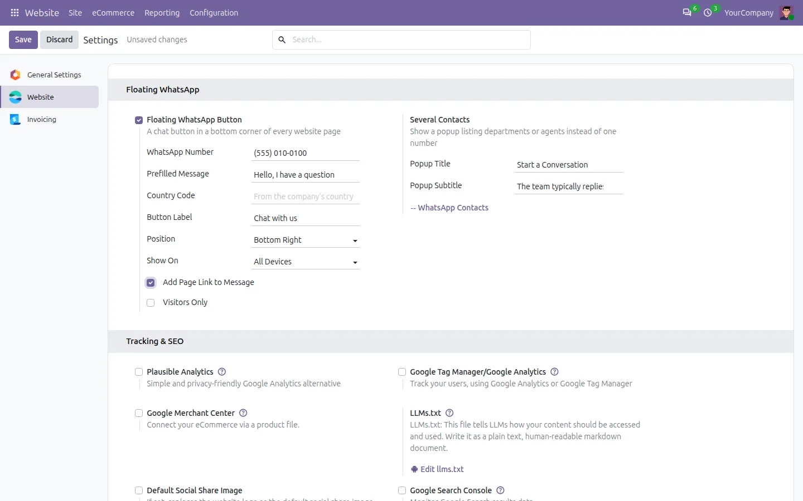
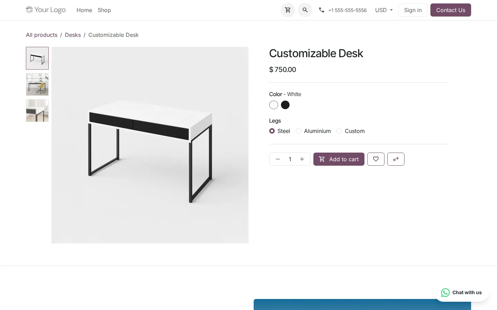
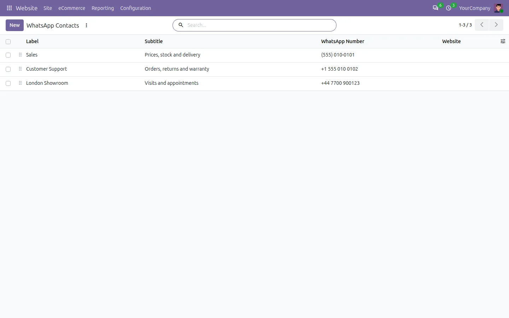
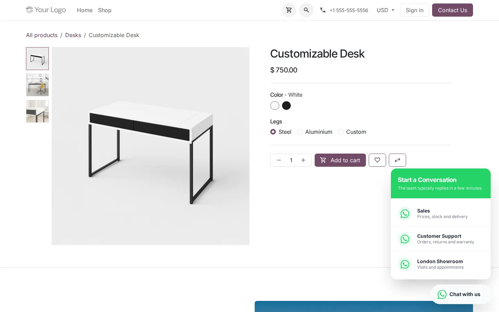
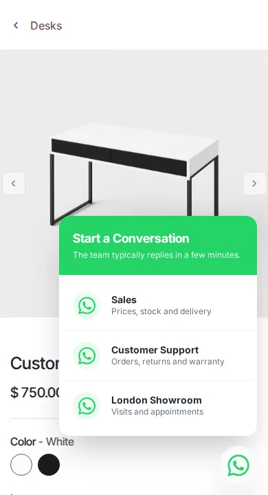

WhatsApp Button - Floating Chat Widget for Website
WhatsApp floating chat button on every website page: one number or a popup with several contacts, with an optional message already typed in.
- Price
- Free
- Odoo versions
- 16.0
- 17.0
- 18.0
- 19.0
- 20.0
- Technical name
tamadoo_whatsapp_float- License
- LGPL-3

Text and screenshots below are from the Odoo 20.0 version of this module.
A WhatsApp chat button on every page of your website. One number, or a popup of contacts.
What it does
Visitors click the button and WhatsApp opens (the app on a phone, WhatsApp Web on a computer) with your number and, if you want, a message already typed in.
- One number or several contacts: sales, support, branches or agents in a small popup, in the order you drag them.
- Prefilled message per contact.
- Page link in the message (optional): you see which product or page the visitor is asking about.
- National numbers just work:
0812-9988-9392or(555) 010-0100get your country code in front. The code comes from your company's country, or set it yourself. - Bottom right or bottom left; all devices, desktop only or mobile only.
- Visitors only (optional): hidden from logged-in users.
- Multi-website: settings per website; contacts for one website or all.
- Translatable labels, keyboard accessible, hidden in the website editor, round icon on phones.
How to use
1. Turn it on and enter your number
Website › Configuration › Settings › Floating WhatsApp. Enter the number, then optionally the message, label, corner, devices, page link and visitors only.

2. The button is on every page
With one number, a click opens a WhatsApp chat with it straight away.

3. Several contacts (optional)
Website › Site › WhatsApp Contacts: label, subtitle, number, prefilled message and website. Drag to reorder.

The button now opens a popup listing them.

4. On a phone
The label is dropped and the button becomes a round icon.

Requirements
- Odoo 20 — Website (
website).
Tamadoo · tama.odoo@gmail.com
Get WhatsApp Button
Questions before buying? Write to tama.odoo@gmail.com.